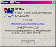

Orphanware
Features
Description
Release Notes
Download
Screenshots
| OrphanwareThis software is no longer being developed or maintained. Since discovering NetLogo I haven't looked back. I still use R2DToo for some tasks where speed is critical but generally I find NetLogo a much more flexible and rewarding environment. And it is being actively developed. If you would like to take over project development, please let me know. 
Features
- Automation! Now you can run long experiments without requiring user intervention. Just write a script to control R2DToo.
- Speed! By decoupling the graphics R2DToo can devote 99% of the CPU time to running the simulation. And since the model is compiled it runs much faster than Java-based simulations.
- Networks! The R2DToo API, available to the model programmer, includes many built-in interaction networks including scale-free.
- Free! You can use and share R2DToo as you like. It even comes with the source code.
Description
Rik's 2D simulation Tool lets you build and run your own cellular automata or other spatial network simulations. R2DToo is designed for scientists, to help with constructing, running, and collecting data from simulations with features such as live time series plots of interesting statistics and automation to let the user run experiments repeatedly without requiring user interaction.
The power of R2DToo is that it is mostly just a front-end for the simulation code which is compiled separately and loaded into the program. So you, the programmer, are free to make the underlying simulation as complicated as you like. R2DToo is ideal for simulations involving a fixed, discrete network of nodes because it provides special tools that simplify coding and greatly enhance performance. It has grown from it's roots as a 2-dimensional simulation package to support a variety of neighbourhoods (1D, 2D Moore, von Neumann, scale-free random network, etc.).
However, R2DToo may be a good choice even if your model does not employ a fixed interaction network because it offers a consistent user interface and takes full advantage of the machine's processing power. At it's fastest setting it automatically reduces the computing time devoted to updating the display in order to give 99% of the CPU time to the simulation itself...so your simulation can run at 99% of it's theoretical speed without compromising the user interface! (You can also adjust this setting so that no frames are dropped.)
Unfortunately, R2DToo is only available for MS-Windows platforms. If you need a portable environment you might try Ascape which is built on Java so it can run on almost any machine. So, you might ask, why should I use R2DToo? Because it is fast. My test results estimate it is 50-60 times faster than Ascape. (R2DToo 1.3 vs. Ascape 1.9.1, tested with Conway's Game of Life, all graphics disabled.) Does it matter given the speed of today's computers? It depends on the task, but even if computer performance is doubling every year, R2DToo can let you do experiments today that you might not be able to do for 6 years with other tools!
Release Notes
v1.9 March 9, 2003
- cosmetic changes (bigger, prettier buttons).
- fixed: some corrections in help files.
- fixed: occasional loss of user responsiveness. Reduced thread priorities to lowest.
- fixed: (I think.) Exceptions when starting with no model loaded and ancillary forms visible.
- added automation method Refresh to update display, eg. after SetState.
- added "R2DToo Help" item to start menu group.
- added hints while hovering over view portal (provided by model function getAgentHint).
- added "Mandelbrot Set" model to install package.
- API v1.6:
For older release notes see ReadMe.txt.
Download | R2DToo version 1.9 for Windows 9x/ME/NT/2000/XP | | Freeware (with source code) |
Screenshots
Here are some sample screens from the model "Conway's Life":
The main window.
|
Control the parameters of a new simulation.
|
Plot statistics and save/print them.
|
Inspect individual sites.
|
Tell the simulation to stop when a condition is met.
|

R2DToo's "About" box.
|
Add an "About" box for your model, with a hyperlink to your site.
|
|

{kind=link}
{kind=link}
{kind=link}
{kind=link}
{kind=link}
{kind=link}
{kind=link}